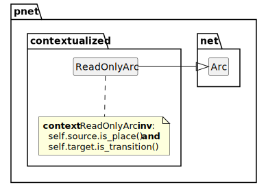
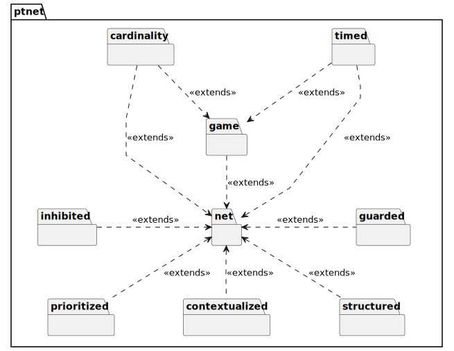

Notes on Petri Nets
Table of Contents
- 1. Place/Transition Nets
- 2. Classification
- 3. Appendix: Meta Model
- 4. Appendix: PTNet Language
- 5. Appendix: GraphViz
A Petri net is a graphical and mathematical modeling tool. The concept of Petri nets has its origin in Carl Adam Petri’s dissertation “Kommunikation mit Automaten”, submitted in 1962 to the faculty of Mathematics and Physics at the Technische Universität Darmstadt, Germany.
Petri nets are a well-used tool for describing and studying systems that are characterized as being concurrent, asynchronous, distributed, parallel, nondeterministic, and/or stochastic. As a graphical tool, Petri nets can be used as a visual-communication aid similar to flow charts, block diagrams, and networks. In addition, tokens are used in these nets to simulate the dynamic and concurrent activities of systems. As a mathematical tool, it is possible to set up state equations, algebraic equations, and other mathematical models governing the behavior of systems.
1. Place/Transition Nets
1.1. Core Place/Transition Net
A Net \(N\) consists of a tuple of places (the set \(P\)), transitions (the set \(T\)), and arcs (the set \(A\)) that connect them. Note that arcs are historically known as flow relations and the set is named \(F\).
\[\tag{Net} N = \left\langle P,T,A \right\rangle\]
The sets of places \(P\) and transitions \(T\) are disjoint.
\[ P \cap T = \emptyset\]
Arcs are a directed connection between a place/transition pair. We will use the notation \(a_{src}\) for the source end and \(a_{tgt}\) for the target end of an arc \(a\).
\[\tag{Net Arc} A = \left(P \times T \right) \cup \left(T \times P \right)\]
Input arcs connect a source place to a target transition.
\[\tag{Input Arcs} a_{in} = \left\{ a \in A \mid a_{tgt} \in T \right\}\] \[ a_{in}(t) = \left \{ a \in A \mid a_{tgt} = t \right \}\]
The set of input places for a transition \(t\) is called its preset or \({}^{\bullet}t\).
\[\tag{Preset} {}^{\bullet}t = \left\{ p \in P \mid A(p,t) \right\}\]
Output arcs connect a source transition to a target place.
\[\tag{Output Arcs} a_{out} = \left\{ a \in A \mid a_{src} \in T \right\}\] \[ a_{out}(t) = \left\{ a \in A \mid a_{src} = t \right\}\]
The set of output places for a transition \(t\) is called its postset or \(t^{\bullet}\).
\[\tag{Postset} t^{\bullet} = \left\{ p \in P \mid A(t,p) \right\}\]
1.1.1. Meta Model

Figure 1: Core Net Module
1.1.2. Textual Notation
net net0 {
place p1, p2
transition t1
arc p1 -> t1 -> p2
}
1.1.3. Graphical Notation
Figure 2: Core Net
- Places
- These are drawn as a circle without any fill color with their label outside the shape.
- Transitions
- These are drawn as filled rectangles with their label outside the shape. It is often the case that a transition is shown as a solid block of color, our representation will always have a border/fill combination for legibility.
- Arcs
- These are drawn as directed arrows from source to target with a filled triangular arrow head.
1.2. Core Token Game
Places can contain tokens; the current state of the modeled system (termed the marking function \(M\)) is given by the number of tokens in each place.
\[\tag{Marking Function} M: P \mapsto \mathbb{N}\]
The initial marking of a net is noted as \(M_{im}\) or more commonly \(M_0\). A marked net extends the Net tuple with a particular marking \(M\).
\[\tag{Marked Net} N_M = \left\langle P,T,A,M \right\rangle\]
Transitions are active components. They model activities which can occur (the transition fires), thus changing the state of the system (the marking of the Petri net). Transitions are only allowed to fire if they are enabled, which means that all the preconditions for the activity must be fulfilled, i.e. there are enough tokens available in the input places. For this check we use the undefined function \(min\) which can only be defined as we define the type of tokens later.
\[\tag{Enabled Function} enabled\left(t \in T \right) = \forall p \in {}^{\bullet}t: min\left(A\left(p,t\right)\right)\]
A net \(N\) is therefore enabled iff any transition in \(N\) is enabled.
\[enabled\left(N_M\right) \iff \exists t \in T: enabled\left(t\right)\]
When the transition fires, it removes tokens from its input places and adds some at all of its output places. The number of tokens removed or added depends on the cardinality of each arc.
The firing of transitions in the marking \(M_n\) results in the new marking \(M_{n+1}\). The interactive firing of transitions in subsequent markings is called the token game.
A particular game is complete, or terminated if there are no more transitions enabled.
\[\tag{Termination} terminated\left(N_M\right) = \forall t \in T: \neg enabled\left(t\right)\]
1.2.1. Meta Model

Figure 3: Core Game Module
1.2.2. Textual Notation
net net0 {
place p1, p2, p3
transition t1, t2
arc p1 -> t1 -> p2 -> t2 -> p3
initial marking {
p1 = true
}
}
1.2.3. Graphical Notation

Figure 4: Basic Petri Net Components
- Marked Places
- Markings are drawn within the place shape, the exact format is dependent on the token type.
- For boolean tokens …
- For numeric tokens …
- Unmarked Places
- Places are drawn empty, they may use a muted color for their boundary.
- Enabled Transitions
- Shown with a dark green boundary and a light green fill to stand out.
- Disabled Transitions
- These may be drawn with muted boundary and fill colors.
1.2.4. Patterns
Certain patterns of places and transitions appear commonly in nets, and correspond to operations in concurrent systems and are therefore useful to enumerate here.
The first of these is choice, or conflict where a place may be in the preset of multiple transitions. In this case, only one transition may fire and the game must choose which branch to take in a random manner.
\[\tag{Choice} \left| \left\{ t \in T : p \in {}^{\bullet}t \right\} \right| > 1\]
In the following example the place p1 may cause the transition t1 or t2 to fire but we don’t know which.
net choice {
place p1, p2, p3
transition t1, t2
arc p1 -> t1
arc p1 -> t2
arc t1 -> p2
arc t2 -> p3
}
Figure 5: Pattern Choice/Conflict
The second pattern to consider is the fork, where a transition has more than one place in its postset such that each will receive a token when it fires. This allows each branch of the fork to run concurrently.
\[\tag{Fork} \left( \left| {}^{\bullet}t \right| = 1 \right) \land \left( \left| t^{\bullet} \right| > 1 \right)\]
In the following example when t1 fires the places p2 and p3 represent separate threads of execution.
net fork {
place p1, p2, p3
transition t1
arc p1 -> t1
arc t1 -> p2
arc t1 -> p3
}
Figure 6: Pattern Fork
A join brings together two or more branches at a single transition. Typically this implies that the join has only one place in its postset.
\[\tag{Join} \left( \left| {}^{\bullet}t \right| > 1 \right) \land \left( \left| t^{\bullet} \right| = 1 \right)\]
In the following example t1 is only enabled when tokens are present at both p1 and p2.
net join {
place p1, p2, p3
transition t1
arc p1 -> t1
arc t1 -> p2
arc t1 -> p3
}
Figure 7: Pattern Join
A rendezvous is a point at which a transition acts as both a join and a fork, allowing synchronization between two concurrent processes.
\[\tag{Rendezvous} \left( \left| {}^{\bullet}t \right| > 1 \right) \land \left( \left| {}^{\bullet}t \right| = \left| t^{\bullet} \right| \right)\]
In the following example, which has an \(x\) thread and a \(y\) thread, the transition xyt1 will only be enabled
when both threads are able to contribute tokens and it can be seen that the \(y\) thread will take longer to arrive than
the \(x\) thread. Once the two threads are synchronized they carry on from xyt1 concurrently.
net rendezvous {
place x1, x2, x3
place y1, y2, y3, y4
transition xt1, xyt1, yt1, yt2
arc x1 -> xt1 -> x2
arc y1 -> yt1 -> y2 -> yt2 -> y3
arc (x2, y3) -> xyt1 -> (x3, y4)
}
Figure 8: Pattern Rendezvous
1.3. Guarded Transitions Extension
In some cases it is desirable to model conditions that will enable/disable a transition beyond the required set of input tokens. To accomplish this we add a guard function \(G\) to our net definition.
\[\tag{Guarded Net} N_G = \left\langle P,T,A,G \right\rangle\]
This function maps the set of transitions and a particular marking to a truth value.
\[\tag{Guard Function} G: T \times M_n \mapsto \mathbb{B}\]
This function is called from within the existing enable check as follows.
\[\tag{Guarded enabled} enabled\left(t \in T, M_n \right) = \forall p \in {}^{\bullet}t: min(A(p,t)) \land G(t, M_n)\]
1.3.1. Meta Model

Figure 9: Guarded Transitions Module
1.3.2. Textual Notation
TBD
1.3.3. Graphical Notation
TBD
1.4. Inhibited Transitions Extension
An inhibitor arc imposes the precondition that the transition may only fire when the place is empty; this allows arbitrary computations on numbers of tokens to be expressed, which makes the formalism Turing complete and implies existence of a universal net. The set of inhibitor arcs are noted as \(A_{\circ}\) inhibitor arcs .
A reset arc does not impose a precondition on firing, and empties the place when the transition fires; this makes reachability undecidable, while some other properties, such as termination, remain decidable. The set of reset arcs are noted as \(A_{\blacktriangleright}\).
For both inhibitor and reset arcs the source must be a place, and the target must be a transition.
\[\forall a \in A_{\circ} \cup A_{\blacktriangleright}: a \in (P \times T)\]
We now define a set, \\(A^{+}\\), which is the union of standard arcs, inhibitor arcs, and reset arcs.
\[\tag{Arc Types} A^{+} = A \cup A_{\circ} \cup A_{\blacktriangleright}\]
A net that includes such arcs is now defined to include this extended set of arcs.
\[\tag{Inhibited Net} N = \left\langle P,T,A^{+} \right\rangle\]
Neither inhibitor or reset arcs may have weights.
An inhibitor arc must connect from a place to a transition.
\[\tag{Inhibitor} i \in \left(P \times T \right) \land W(i) = \emptyset\]
A reset arc must connect from a transition to place.
\[\tag{Inhibitor} r \in \left(T \times P \right) \land W(r) = \emptyset\]
1.4.1. Meta Model

Figure 10: Inhibited and Reset Arcs Module
1.4.2. Textual Notation
net net0 {
place p1, p2
transition t1
arc p1 -inhibitor> t1
arc t1 -reset> p2
}
1.4.3. Graphical Notation

Figure 11: Inhibited and Reset Arcs
- Inhibitor Arc
- An inhibitor arc is drawn as a line from the source place to target transition but with an arrow head which is an open circle.
- Reset Arc
- A reset arc is drawn as a line from the source place to target transition but with an arrow head which is two small filled trangles.
1.5. Prioritized Transitions Extension
TBD
Given a priority function \(\pi\) that maps transitions to priority values in $\mathbb{N},.
\[\tag{Priority Function} \pi: T ↦ \mathbb{N}\]
we can define a prioritized net as a net \(N\) with the addition of the function \(\pi\).
\[\tag{Prioritized Net} N_\pi = \left\langle P,T,A,\pi \right\rangle\]
1.5.1. Meta Model
Figure 12: Prioritized Transitions Extension Module
1.5.2. Textual Notation
TBD
1.5.3. Graphical Notation
TBD
1.6. Contextualized Arcs Extension
Read-only, or simply read, arcs extend the semantics of a net by allowing a transition that is enabled by the presence of tokens at an input place without consuming them. Nets supporting read-only arcs are referred to as a contextual net.
Read-only arcs may have associated weights.
1.6.1. Meta Model

Figure 13: Contextualized Arcs Extension Module
1.6.2. Textual Notation
net net0 {
place p1, p2
transition t1
arc p1 -read> t1 -> p2
}
1.6.3. Graphical Notation
A read-only arc is drawn as a line from the source place to target transition but with an arrow head which is a filled circle.

Figure 14: Read-only Arcs Extension
1.7. Structured Nets Extension
TBD
1.7.1. Meta Model
TBD
1.7.2. Textual Notation
TBD
1.7.3. Graphical Notation
TBD
1.8. Timed Transitions Extension
To study performance and dependability issues of systems it is necessary to include a timing concept into the model. There are several possibilities to do this for a Petri net; however, the most common way is to associate a firing delay with each transition. This delay specifies the time that the transition has to be enabled, before it can actually fire. If the delay is a random distribution function, the resulting net class is called a stochastic Petri net. Different types of transitions can be distinguished depending on their associated delay, for instance immediate transitions (no delay), exponential transitions (delay is an exponential distribution), and deterministic transitions (delay is fixed).
\[\tag{Timed Net} N_D = \left\langle P,T,A,D \right\rangle\]
Timing/Duration function \(D\).
\[\tag{Timing Function} D: T ↦ \mathbb{N}\]
- Deterministic or interval: Timed PN (TPN)
- Random durations : Stochastic PN (SPN)
This also impacts the termination condition for a net in that it may not be possible to enable a particular transition not because there are tokens present in its preset but because it is busy completing a previous firing.
\[\tag{Termination} terminated\left(N_D\right) = \forall t \in T: \neg enabled\left(t\right) \land \neg busy\left(t\right)\]
1.8.1. Meta Model

Figure 15: Timed Transitions Extension Module
1.8.2. Textual Notation
net net0 {
place p1, p2, p3, p4
transition t1 {
duration = !
}
transition t2 {
duration = 2
}
transition t3 {
duration = [1, 4]
}
arc p1 -> t1 -> p2 -> t2 -> p3 -> t3 -> p4
}
1.8.3. Graphical Notation
Figure 16: Timed Transitions
- Immediate
- Rather than the usual filled rectangle an immediate transition is drawn as a narrow bar instead.
- Fixed
- The usual shape is drawn, but the label includes the character “π” followed by the duration. This is usually separated from the initial label content with a colon “:”.
- Interval
- The usual shape is drawn, but the label includes the character “π” followed by the duration interval converted to the closed form \([n,m]\). This is usually separated from the initial label content with a colon “:”.
Because there will now be steps in the token game where a particular transition is still in the process of firing (doing work) it is useful to visually distinguish these in the visual representation of net. In the example below we draw an in-progress transition with a dashed border as well as a different color. The duration component of the label is also updated to show that one of two steps have been completed.
Figure 17: Timed Transition Execution
1.9. Cardinality Extension
1.9.1. Meta Model

Figure 18: Cardinality Extension Module
1.9.2. Arc Cardinality
Arcs may have an associated weight, sometimes termed its cardinality or multiplicity, that denotes the number of tokens that are carried on that arc. The Net tuple is therefore extended with a weight function \(W\). A Net without explicit arc weights is behaviorally the same as a Net where all arc weights are set to \(1\). Where a Net does support arc weights any unspecified weight assumes the default value of \(1\).
\[\tag{Weighted Net} N_W = \left\langle P,T,A,W \right\rangle\]
This function in general maps the set of arcs to positive natural numbers – an arc weight of \(0\) would make no sense.
\[\tag{Weight Function} W: A \mapsto \mathbb{N^{+}}\]
An input arc \(a\) is therefore enabled if the input place \(p\) has a marking greater or equal than the arc cardinality, and so we can define the \(min\) function described above as follows.
\[\tag{Weighted min} min(a \in A) = a_{src} \in P \land M(a_{src}) \ge W(a)\]
An output arc will transfer \(W(a)\) tokens from the transition to the output place \(a_{tgt}\).
1.9.3. Place Cardinality
Correspondingly, it is possible to add a cardinality, or capacity limit to places such that the cardinality is an upper bound on the number of tokens that may be present at the place. A capacity-limited net extends the Net tuple with a capacity function \(K\). A Net without explicit capacity limits is behaviorally the same as a Net where all arc cardinalities are set to infinity \(∞\). Where a Net does support capacity limits any unspecified capacity assumes the default value of \(∞\).
\[\tag{Capacity-Limited Net} N_K = \left\langle P,T,A,K \right\rangle\]
This function in general maps the set of places to natural numbers.
\[\tag{Capacity Function} K: P \mapsto \mathbb{N^{+}\cup\\{\infty\\}}\]
\[\tag{Place Invariant} \forall p\in P: M_n(p) \le K(p)\]
The presence of a capacity limit does not affect input arcs, however when a transition may fire each output arc is checked to ensure that the output place has capacity to receive the tokens from the arc.
\[\tag{Capacity Limit} free(a \in A) = \overset{a}{\rightarrow} \in P \land K(\overset{a}{\rightarrow}) \ge M(\overset{a}{\rightarrow}) + W(a)\]
\[\tag{Limited enabled} enabled\left(t \in T \right) = \forall p_{in} \in {}^{\bullet}t: min(A(p_{in},t)) \land \forall p_{out} \in t^{\bullet}: free(A(t,p_{out}))\]
- Textual Notation
net net0 { place p1 { capacity = 2 } place p2 { capacity = inf } transition t1 arc p1 -> t1 -> p2 } - Graphical Notation
Place cardinality is displayed as a superscript value \(id^{[n]}\) on the place id. It is possible to include the unbounded capacity in this way, as \(id^{[\infty]}\), but this is not generally shown as it is understood to be the default.
Figure 20: Place Cardinality Extension
2. Classification
This is a high-level classification of Petri Nets originally made by Monika Trompedeller in 1995, and is based on a survey by L. Bernardinello and F. De Cindio from 1992. The classification has not been updated since then and is therefore chiefly of historic interest. The classification is, however, useful for getting a quick overview of the main differences between various kinds of Petri Nets.
- Level 1: nets characterized by places which can represent boolean values (\(\mathbb{B}\)), i.e., a place is
marked by at most one unstructured token.
- Condition/Event systems
- Elementary nets
- Level 2: nets characterised by Places which can represent positive integer values (\(\mathbb{N^{+}}\)), i.e.,
a place is marked by a number of unstructured tokens.
- Place/Transition systems
- (Ordinary) Petri nets
- Free choice systems
- S-Systems
- State Machines
- T-Systems
- Marked Graphs
- S-Systems
- Free choice systems
- (Ordinary) Petri nets
- Place/Transition systems
- Level 3: nets characterised by Places which can represent high-level values, i.e., a place is marked by a
multi-set of structured tokens.
- Algebraic Petri nets
- Product nets
- Traditional High-Level nets
- Predicate/Transition Petri nets
- Colored Petri nets
- Well-Formed nets
- Regular nets
2.1. Extensions
Note that the table below uses \(\mathbb{B}\) to represent the set of boolean values \(\left\{ \bot, \top \right\}\) or \(\left\{ 0, 1 \right\}\).
| Name | Abbr | Tokens | \(W\) | \(K\) | I/R | R-O | \(G\) | \(D\) | Stochastic | Level |
|---|---|---|---|---|---|---|---|---|---|---|
| Elementary net | EN | \(\mathbb{B}\) | No | No | No | No | No | No | No | 1 |
| Petri net | PN | \(\mathbb{N^{+}}\) | Yes | No | No | No | No | No | No | 2 |
| Colored Petri net | CPN | \(C\) | Yes | Yes | No | No | No | No | No | 3 |
2.2. Restrictions
Instead of extending the Petri net formalism, we can also look at restricting it, and look at particular types of Petri nets, obtained by restricting the syntax in a particular way.
For example Ordinary Petri nets are the nets where all arc weights are 1 and all place capacity is infinite.
\[\tag{PN Restriction} \forall p\in P: K(p) = \infty \land \forall a\in A: W(a) = 1\]
Restricting further, the following types of ordinary Petri nets are commonly used and studied.
In a state machine (SM), every transition has one incoming arc, and one outgoing arc, and all markings have exactly one token. As a consequence, there can not be concurrency, but there can be conflict (i.e. nondeterminism).
\[\tag{SM Restriction} \forall t\in T: \left| t^{\bullet}\right| = \left|{}^{\bullet}t \right| = 1\]
In a marked graph (MG), every place has one incoming arc, and one outgoing arc. This means, that there can not be conflict, but there can be concurrency.
\[\tag{MG Restriction} \forall p\in P: \left| p^{\bullet}\right| = \left|{}^{\bullet}p \right| = 1\]
In a free choice net (FC), every arc from a place to a transition is either the only arc from that place or the only arc to that transition, i.e. there can be both concurrency and conflict, but not at the same time.
\[\tag{FC Restriction} \forall p\in P: (\left|p^{\bullet}\right|\leq 1) \vee ({}^{\bullet} (p^{\bullet})=\\{p\\})\]
A free choice net is an S-system iff its underlying net is an S-net.
\[\tag{S-net} \forall t\in T: \left| {}^{\bullet}t\right| \le 1 \land \left|t^{\bullet}\right| \le 1\]
A free choice net is a T-system iff its underlying net is a T-net. In a T-System there is never any conflict because there are no (forward) branched places.
\[\tag{T-net} \forall p\in P: \left| {}^{\bullet}p \right| \le 1 \land \left| p^{\bullet} \right| \le 1\]
Extended free choice (EFC) – a Petri net that can be transformed into an FC.
In an asymmetric choice net (AC), concurrency and conflict (in sum, confusion) may occur, but not symmetrically.
\[\tag{AC Restriction} \forall p_1,p_2\in P: (p_1{}^{\bullet} \cap p_2{}^{\bullet} \neq \emptyset) \to [(p_1{}^{\bullet} \subseteq p_2{}^{\bullet}) \vee (p_2{}^{\bullet} \subseteq p_1{}^{\bullet})]\]
2.3. Elementary Nets
An Elementary net is a kind of place/transition net with the following characteristics.
- The token type is the boolean type \(\mathbb{B}\).
- Arcs do not have weights, or are modeled with fixed weights of \(1\).
- Places do not have capacity constraints, or are modeled with infinite \(\infty\) capacity.
- Transitions do not have duration values, or are modeled with a fixed duration of \(0\).
- Transitions do not have guard expressions, or are modeled with a fixed guard returning true (\(\top\)).
- No inhibitor, reset, or read-only arcs are allowed.

Figure 21: Elementary Net Module
3. Appendix: Meta Model
3.1. Structure

Figure 22: Core Modules
3.2. Common Types

Figure 23: Common Types and Interfaces
4. Appendix: PTNet Language
PTNet is a source form that allows for compact representation of nets in a readable form.
4.1. PTNet Grammar
file = net | marking ; net = "net" name "{" property* defaults? tokens? node_or_arc* initial_marking? "}" ; property = name "=" ( value | duration ) ; defaults = "defaults" property_set ; property_set = "{" property* "}" ; tokens = "tokens" ( token_value "*" )? token_counter ; token_value = unit_type | token_set_boolean | token_set_integer | token_set_positive | token_set_natural | token_set_string | tuple_type | set_type ; token_counter = token_set_boolean | token_set_positive | token_set_natural | set_type ; unit_type = "()" ; token_set_boolean = "Boolean" ; token_set_integer = "Integer" ; token_set_natural = "Natural" ; token_set_positive = "Positive" ; token_set_strings = "String" ; tuple_type = "⟨" tuple_member ( "," tuple_member )* "⟩" tuple_member = name | new_token_set | new_token_tuple ; set_type = "⟨" set_member ( "," set_member )* "⟩" set_member = name | boolean | natural_positive | natural ; node_or_arc = place | transition | arc | subnet ; place = "place" name_list property_set? ; transition = "transition" name_list property_set? ; arc = "arc" arc_expression property_set? ; arc_expression = arc_name_or_expression_list arc_symbol arc_name_or_expression_list ; arc_name_or_expression_list = arc_name_or_expression ( "," arc_name_or_expression )* ; arc_name_or_expression = name | "(" arc_expression ")" ; arc_symbol = "->" | "-inhibitor>" | "-reset>" | "-read-" ; subnet = "net" name "{" property* defaults? public_places? node_or_arc* "}" ; public_places = "public" name_list ; initial_marking = "initial" marking ; marking = "marking" "{" property+ "}" ; name = ( ASCII_LETTER | GREEK_LETTER ) ( ASCII_LETTER | GREEK_LETTER | "_")* ; name_list = name ( "," name )* ; value = boolean | number | quoted_string | set_value | multiset_value | tuple_value ; bcfffvoolean = "true" | "false" ; number = natural | "inf" ; natural = "0" | natural_positive+ natural_positive = [1-9] ASCII_DIGIT* quoted_string = "\"" [^\"]* "\"" ; duration = "!" | natural_positive | ( "[" | "(" ) natural_positive "," natural_positive ( "]" | ")" ) ; set_value = "{" value ( "," value )* "}" ; multiset_value = "[" value ( "," value )* "]" ; tuple_value = "⟨" value ( "," value )* "⟩" ;
5. Appendix: GraphViz
5.1. Net
strict digraph {
id="{id}";
label="{label}";
bgcolor="transparent";
compound=true;
fontname="Helvetica Neue,Helvetica,Arial,sans-serif";
fontsize=14;
nodesep={seperation};
rankdir={rankdir};
ranksep{seperation};
}
| Parameter | Description | Default |
|---|---|---|
id |
use the prefix string “net” followed by a unique identifier (integer) | “net0” |
seperation |
determine node/rank spacing | 0.75 |
rankdir |
this is best as either “TD” for top-down, or “LR” for left-to-right | “LR” |
label |
a user-defined label string, or nothing | “” |
5.2. Place
strict digraph {
{id} [
id="{id}";
shape="circle";
height={size};
width={size};
label="{marking}";
xlabel="{label}";
];
}
| Parameter | Description | Default |
|---|---|---|
id |
use the prefix string “p” followed by a unique identifier (integer) | “p0” |
size |
in this case the diameter of the place circle | 0.5 |
marking |
a string representation of the marking of this place | “” |
label |
a user-defined label string, or the value of id |
{id} |
5.3. Transition
strict digraph {
{id} [
id="{id}";
shape="rectangle";
style="filled";
color="{line_color}";
fillcolor="{fill_color}";
height={size};
width={=size*0.2};
label="";
xlabel="{label}";
];
}
| Parameter | Description | Default |
|---|---|---|
id |
use the prefix string “t” followed by a unique identifier (integer) | “t0” |
line_color |
the color of the border of the transition | “black” |
fill_color |
the color of the inside of the transition | “darkgrey” |
size |
in this case the height of the transition, its width is 20% of the height | 0.5 |
label |
a user-defined label string, or the value of id |
{id} |
For immediate transitions the size is specified as a fixed value, 0.02 to give a visually solid bar.
5.4. Arc
strict digraph {
{source} -> {target} [
id="{source}_{target}";
arrowhead="{arc_head}";
arrowsize={scale}
label="{display_label}";
];
}
| Parameter | Description | Default |
|---|---|---|
source |
the id of the arc source |
N/A |
target |
the id of the arc target |
N/A |
arc_head |
the arrow head shape, different for different arc types | “normal” |
scale |
a scaling factor for the arrow shape | 1.0 |
display_label |
a display label for the arc | “” |
For normal arcs the arc_head is “normal” which is a filled triangular head; for inhibitor arcs it is an open circle “odot”, for
a reset arc it is two filled triangles “normalnormal” (like a fast-forward symbol) and a scale factor of 0.66. A
read-only arc is a filled circle “odot”.
5.5. Sub-net
strict digraph {
subgraph cluster_{id} {
label="{id}";
margin={margin};
}
}
| Parameter | Description | Default |
|---|---|---|
id |
use the prefix string “net” followed by a unique identifier (integer) | “net1” |
label |
a user-defined label string, or the value of id |
{id} |
margin |
the margin in px between the cluster boundary and the included elements | 24 |
5.6. Colors
| Object | State | Line Color | Fill Color |
|---|---|---|---|
| Place | Static | “black” | N/A |
| Transition | Static | “black” | “darkgrey” |
| Transition | Dynamic, Enabled | “darkgreen” | “lightgreen” |
| Transition | Dynamic, Not Enabled | “darkgrey” | “lightgrey” |
| Transition | Dynamic, Busy | “darkblue” | “lightblue” |
| Arc | Static | “black” | N/A |